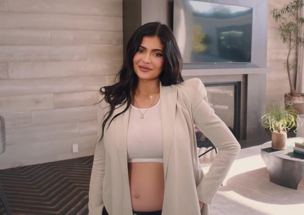
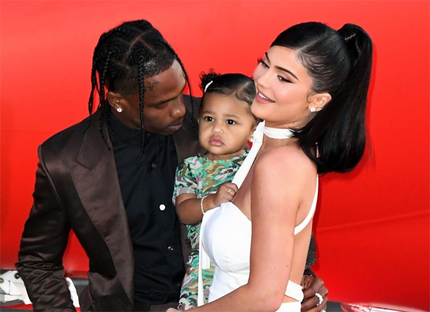
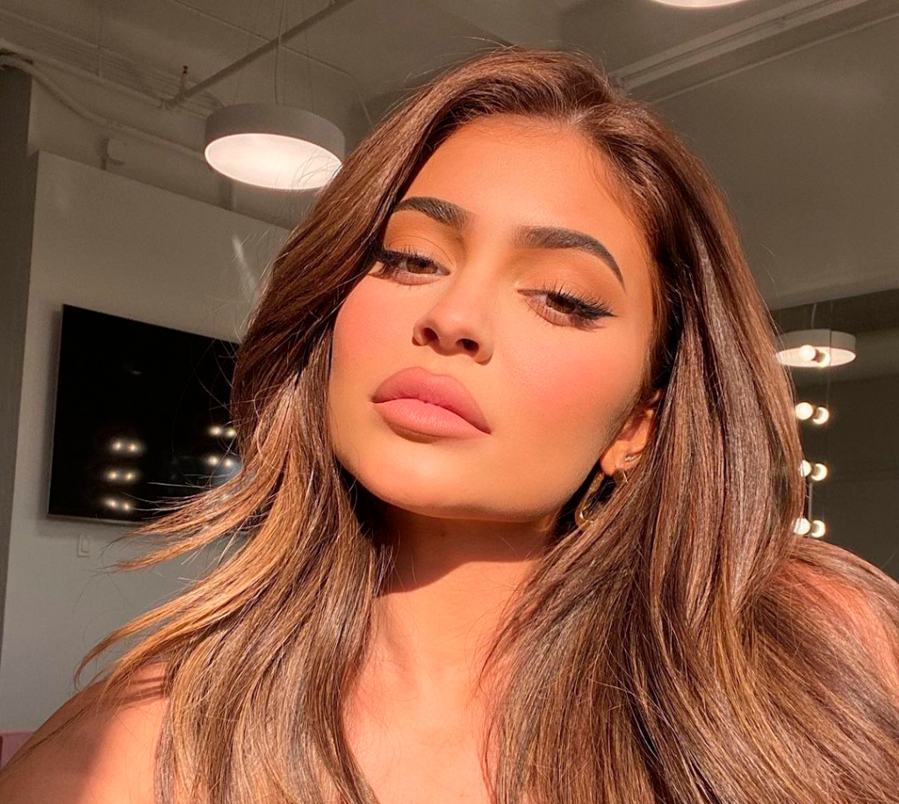
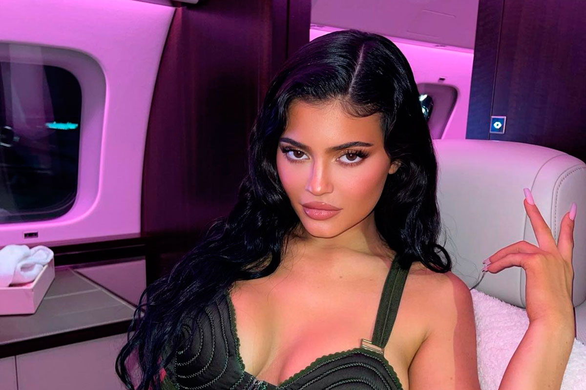

Kylie Jenner
Quem é?
Kylie Kristen Jenner (Los Angeles, 10 de agosto de 1997)[4][5] é uma empresária, modelo e personalidade da mídia norte-americana. Ela se destacou ao aparecer no reality show Keeping Up with the Kardashians, estrelado por Kim Kardashian e transmitido pelo canal E!.
Carreira
- 2007–2012: Keeping Up with the Kardashians
- 2013–2014: Reputação crescente
- 2015–2018: Ascensão da Kylie Cosmetics
- 2019–presente: Estreia de Kylie Skin
Vida Pessoal
- Fortuna
Em março de 2019, a revista Forbes incluiu Jenner na sua lista de bilionários. Além de sua carreira na televisão, que começou com Keeping Up with the Kardashians
- Coleção "Rock vs. Rap"
Em 28 de junho de 2017, as irmãs Jenner anunciaram que lançariam uma linha de camisetas vintage para sua linha de roupas Kendall + Kylie chamada Rock vs. Rap
- Capa da Forbes
Jenner apareceu na capa da edição de agosto de 2018 da Forbes. Eles estimaram que ela tinha um patrimônio líquido de 900 milhões de dólares, e que estava prestes a se tornar a mais jovem bilionária "por conta própria".



Em setembro Kylie confirmou sua segunda gravidez e mostrou a reação dos familiares em um video
voltar